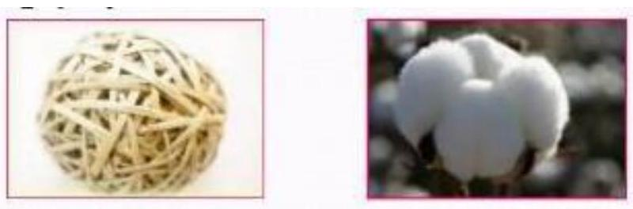
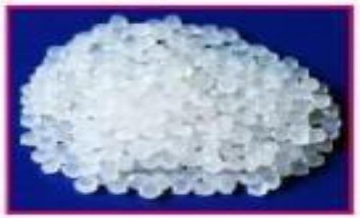

CHAPTER 4
POLYMERS
4.1 Introduction
Polymer- are very large molecules made when 100s of monomers join together to form a long chain. It comes from the Greeks poly means many and mers meaning parts.
Monomer: a single type of molecule or atom that has the ability to chemically bond with other molecules in a long chain.
Polymerisation. Any process in which relatively small molecules, called monomers, combine chemically to produce a very large chainlike or network molecule, called a polymer. All plastics are polymers but not all polymers are plastics.
4.2 Types of polymers
There are several types of polymers. Among the main ones are: There are several types of polymers. Among the main ones are:
- Natural
- Synthetic
- Homopolymer
- Copolymer
- Thermo plastics
- Thermosets
- Long chain polymers.
b) Natural polymers
Is a polymer that results from raw materials found in nature.They include DNA, RNA, cotton,wool,rubber, polysaccharides, starch, glycogen and proteins etc Synthetic polymers.
c) Homopolymer
Synthesised from a single type of monomer.It consists of chains with identical bonding linkages to each monomer unit.This usually implies that polymers are made from all identical monomer molecules.
d) Copolymer
- Formed by two or more monomers coming together.
- The process is called copolymerization.
- Types
- Statistical
- Alternating
- Block
- Graft
e) Thermoplastic
- A type of plastic that can be softened by heat,hardened by cooling and then softened by heat over and over again.
- They are not cross-linked polymer.
- Examples ;polyethylene,nylon,polyvinyl chloride.
f) Thermosets
- Having the property of becming permanently hard and rigid when heated.
- Are rigid at room temperature and do not soften on heating.
- Examples: expoxy resins,phenolic resins,unsaturated polyester resins.
4.3 Classification of polymers
i. Based on origin source
- Natural polymer: they are isolated from natural sources e.g cotton,silk, wool, rubber.
- Synthetic polymers: are synthesized from low molecular weight compounds. e.g. polyethylene,nylon,terylene
- Semi-synthetic polymers-are majorly derived from natural occurring polymers by modification e.g Rayon.
ii. Based on structures
- Linear polymer; molecules form long chain without branches.
- Branched polymer: molecules have branch points that connect 3 or more segments.
- Cross-linked polymer; it includes inter-connections between chains.
- Network polymer: a cross-linked polymer that includes numerus connections between chains.
iii. Based on mode of polymerisation
a Additional Polymerization:
- Same kind of monomers are straight forwardly added.
- It is rapid chain reaction having chemically activated mers
- Each reaction sets up the condition for another to proceed
- It consists of 3 stages :
- As examples of these polymers we have p olysaccharides, which are formed by monomers of monosaccharides, and proteins, which are produced by amino acid monomers.
b Condensation Polymerization
- It involves a polymerization reaction between two monomers with the expulsion of a simple by product .
- It involves individual chemical reaction between reactive mer .
- Bi-product is formed and condensed out.
- This reaction is slower than additional polymerization. v Need reactive functional groups.
4.4 Characteristics of polymer
- Low density
- Low coefficient of friction
- Good corrosion resistance
- Good mould ability
- Poor tensile strength
- Low mechanical properties
- Poor temperature resistance
- Can be produced transparent or different colours
g) Biodegradable polymers
They degrade into biomass, water and carbon dioxide as a result of the action of enzymes or living organisms. Under favourable conditions, they can be degraded in a few weeks.Like the previous options, these compounds can be synthetic or natural. The biodegradable polymers properties come from the following sources:
- Renewables of plant origin, such as cellulose, corn and sugarcane;
- Synthesized by bacteria;
- Fossil sources, such as oil,
- Derived from an animal source, such as proteins, chitin and chitosan.
The application of these compounds is made in the production of bags, food packaging, consumer products and options for agriculture. Because of the biodegradation process, these polymers help prevent the accumulation of garbage and, consequently, pollution.
4.5 Disposal of Polymers
Plastics are widely used but they are difficult to dispose: they either are nonbiodegradable or if they are, they take very long to break down.
There are different ways of getting rid of plastics:
- Landfills - Plastics which are difficult to sort or recycle or that aren't plentiful enough to separate, are usually buried in a landfill.
- Incineration - Waste plastics are burnt in an incinerator.
- Recycling - After sorting, plastics can be recycled in different ways. Plastics can be melted and used to make new objects by remolding. Alternatively, cracking can be used to split plastics into their monomers, from which other plastics or chemicals can be made.
Advantages and Disadvantages
The table shows the advantages and disadvantages of different methods of polymer disposal.
| Method | Advantages | Disadvantages |
|---|---|---|
| Landfill | Most common method of waste disposal | Landfill sites are becoming scarce. |
| Cheap | Large amounts of land needed. | |
| Polyalkenes can take hundreds of years to break down. | ||
| Methane is produced from decomposing waste. This is a greenhouse gas. | ||
| Incineration | Incineration releases energy which can be used to generate electricity. | Toxic gases can be released on incineration. |
| Volume of rubbish is greatly reduced. | Carbon dioxide is produced on incineration which is a greenhouse gas. | |
| Recycling | Saves raw materials including crude oil. | Energy and resources are needed in collecting and sorting waste. It can be more expensive than incineration or landfill. |
| Thermoplastic polymers can be melting down and reshaped. | ||
| Some plastics can be cracked into monomers and used to make new polymers | Polymers needed to be recycled in the same types, which may be difficult to achieve. It is often hard to make the plastic you started with. |
4.6 Applications of Polymers:
a Agriculture and Agribusiness
- Polymeric materials are used in and on soil to improve aeration, provide mulch, and promote plant growth and health.
b Medicine
- Many biomaterials, especially heart valve replacements and blood vessels, are made of polymers like Dacron, Teflon and polyurethane.
C Consumer Science
Plastic containers of all shapes and sizes are light weight and economically less expensive than the more traditional containers. Clothing, floor coverings, garbage disposal bags, and packaging are other polymer applications.
d Industry
Automobile parts, windshields for fighter planes, pipes, tanks, packing materials, insulation, wood substitutes, adhesives, matrix for composites, and elastomers are all polymer applications used in the industrial market.
e Sports
Playground equipment, various balls, golf clubs, swimming pools, and protective helmets are often produced from polymers